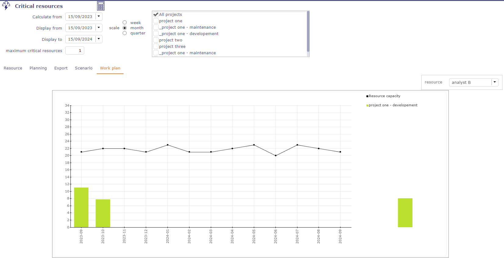
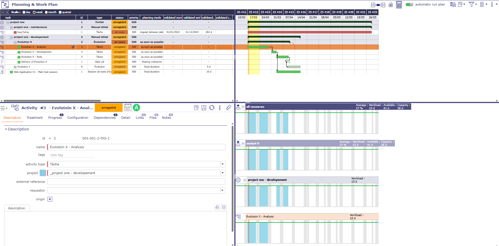
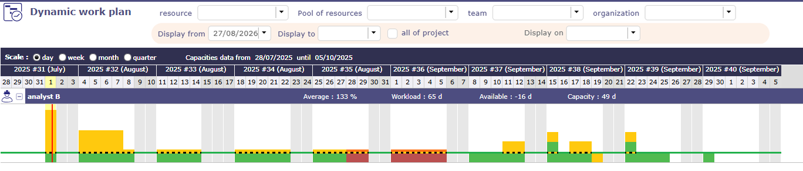
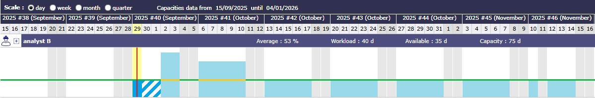
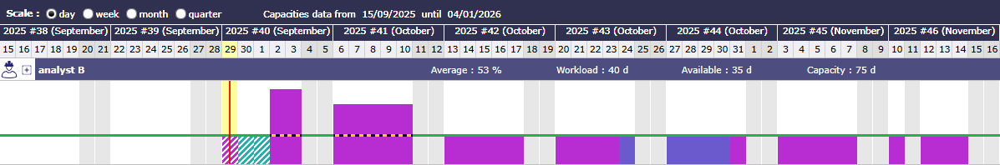
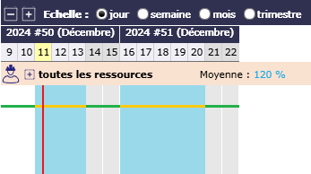
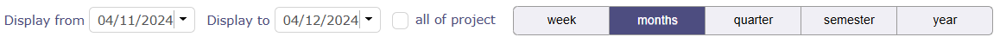
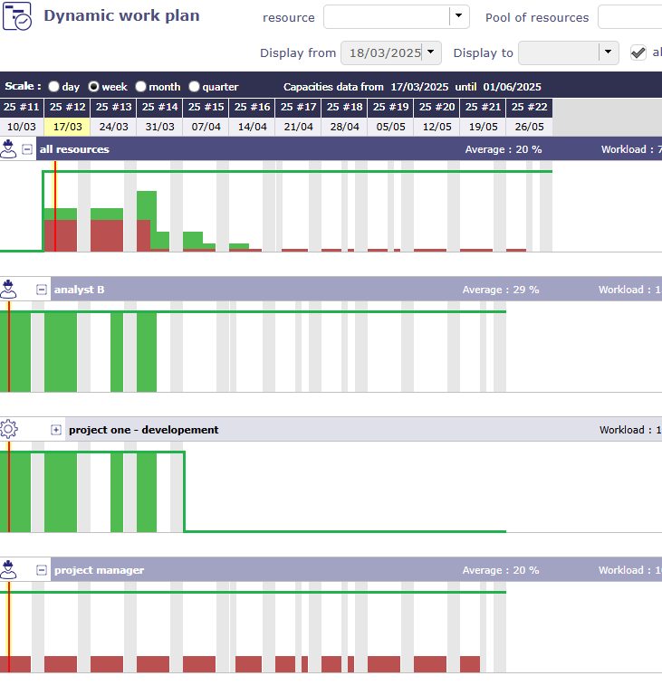
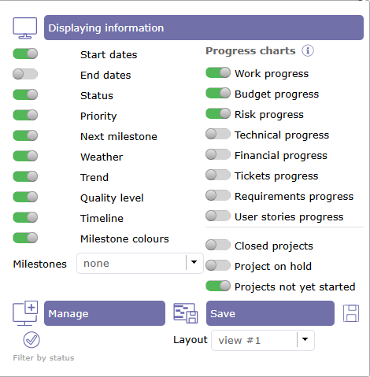
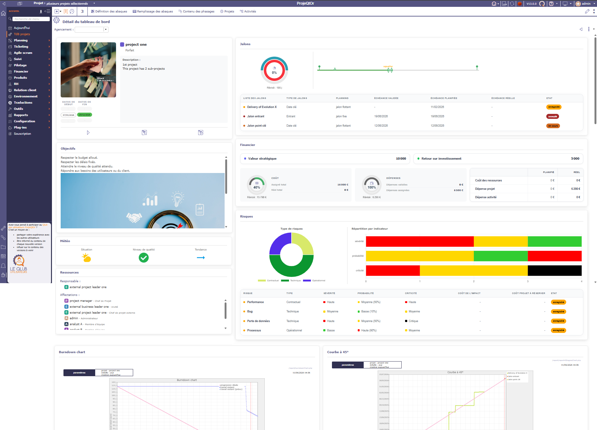

Planning View¶
Other planning views¶
Planning global¶

Global planning¶
The global planning allows to create and visualize any type of element (project, activity, milestones, risk, meeting, action …)

Create a new item¶
Add and Show any new planning element on Gantt chart
The created item is added in the Gantt and detail window is opened.
The detail window allows to complete entry
Project planning and activity planning calculation can be done in the Gantt.

Display items¶
Requirements can be displayed but you will not be able to create them from the planning view
Projects portfolio¶
This screen displays only the projects on the diagram. The activities and other elements that make up the planning are hidden.
Displaying the columns corresponding to the project fields behind the slider allows you to display all the information about your project in a single view: status, priority, dates, charges, duration, costs, etc.
The possibility of displaying personalized fields using the customization plugin is also possible. Click the Columns button to choose which fields to display.
It displays milestone and project dependencies only.
Note
This section describes specific behavior for this screen. All others behaviors are similar to Gantt Chart screen.

Gantt (Projects portfolio)¶
Show milestones
You have the option to show or hide milestones.
It is possible to define the type of milestone to display.
All milestones are available: deliverable, incoming, key date, etc.
The milestones are displayed directly on the bar of your project.

Projects portfolio columns¶
As in the planning view, you display a menu dedicated to the portfolio view by right-clicking on the list of projects.

Right menu¶
Resource planning¶
This screen displays the Gantt chart from a resource perspective.
The assigned tasks are grouped under the resource level.
Regarding resource planning, periodic group meetings are under his responsibility.
Ability to view assigned activities without charge.

Gantt (Resource planning)¶
Limit display to selected ressource or team
Click and select one ressource to display only his data.
Click and select one team to display only data of resources of this team.
Click and select one organization to display only data of resources of this organization.
Gantt charts for resources
The bars used in the Gantt chart for resources differ slightly from the standard planning bars.
Most of the bars used in the Gantt chart are the same as for standard planning.
See: Gantt chart’s bars.
GREY BAR

all is well¶
Condition: Assigned resources are available and meet workload, validated or scheduled dates do not conflict with other items.
The gray bar in the middle graphically represents the actual percentage progress relative to the total duration of the activity.
This makes appear some planning gap between started work and reassessed work.
Dependencies behavior
Links between activities are displayed only in the resource group.
Links existing between tasks on different resources are not displayed.
Note
This section describes specific behavior for this screen.
All others behaviors are similar to Gantt Chart screen.
Tools¶
Click on
 to start the Planning calculation.
to start the Planning calculation.Click on
 to create a new element.
to create a new element.Click on to apply many filters and manage Advanced filters.
Click on
 to organize the columns of the progress data view.
to organize the columns of the progress data view.Click on
 to display the sub-menu.
to display the sub-menu.Click on
 to display this screen in horizontal or vertical mode.
to display this screen in horizontal or vertical mode.
{kind=link}
Display dates¶
This functionality allows to define columns displayed in the progress data view.
More details: Display and organize the columns.
Display options into the subMenu¶
Display options are the same as on the planning view.

Gantt chart options¶
Global view¶

Global view screen¶
The “Global view” screen lists all the main objects created during a project. This allows you to quickly search through all types of items available.
You can also choose to display only certain items through the list to display

Display one or more items¶
Critical resource¶
The critical resources screen will allow you to identify the resources that will cause the project to drift and not miss certain key dates due to lack of capacity on the project.
This amounts to calculating the complete schedule and all your resources in infinite overbooking mode.

Planning in infinite overbooking mode¶
Critical resource list¶
The critical resources table tells you for each critical resource displayed:

Critical resources list¶
The name of the resource
Its load available
Its load used
Overbooking load
Its rank (Index used to calculate the margin = difference between available - used)
This table of critical resources is broken down by project.
Projects using critical resources
The Projects using critical resources table allows you to visualize the number of days late per project and which resources are causing the delay.
The strategic value has no impact on the display of projects and the determination of critical resources. This (numerical) value is free and left to your discretion.
It can be a value between 1 and 100, or a number of Business, regardless, this will allow you to identify whether projects consuming critical resources are strategically sound and therefore worth implementing.
Critical resources planning¶
The Critical resources list by period table is a representation of the current planning, not the ideal planning.
The display will be done by period defined on the scale (week, month, quarter) or by displaying the “overbooking load” necessary to optimize the planning.

Critical resource screen¶
Formatting results and indicators
Indicator is a percentage = (Margin - Overbooked) / Available (* 100)
- Define threshold
Default Red = “< 20%”
Default Orange = “< 5%”
- Late planning
In red, the resource does not have sufficient capacity to complete the task on time
planned end date > Validated end date - overbooking on the activity
- Missing capacity
In yellow, the resource does not have sufficient capacity to complete the task on time but is not the cause of the task delay.
Planned end date > Validated end date - no overbooking
- Optimal planning
In green, the resource has sufficient capacity to complete the task on time
Planned end date < Validated end date - no overbooking on the activity
Critical resources scenario¶
Without affecting your basic schedule, you can simulate starting one or more project(s) on later dates in months.

possible scenarios for a simulation on projects containing critical resources¶
You can also add additional capacity to your pools to check if the possible addition of resources can improve the planning of your projects.
You can apply a particular date for the new capacity to be added which will decide when the new capacity can be added.
Critical resources work plan¶
You can obtain directly on the critical resources screen the report on the load planning on a selected resource for the indicated period.

load planning report for a resource¶
Planning & Dynamic work plan¶
In addition to the planning view and the dynamic work plan view, ProjeQtOr offers a view that combines the two screens.
This screen allows you to quickly visualize how the load quantity affects the dates of your projects.

Planning and dynamic workplan screen¶
Note
The dynamic load plan combined with the planning was created for reading.
The table therefore does not offer the display options and restrictions proposed on the dedicated screen.
Projeqtor offers a dynamic view of the load plan of your resources.
You can view the past and forecast load as well as the future capacity of a resource or all resources and pools.
The display can be restricted using filters.

Dynamic Work plan screen¶
The graph will represent the past and future workload in the form of bars, similar to the Gantt bar detail and the resource or group capacity as a line.
The data is automatically limited to the data for the project(s) selected in the project selector.
Click on  to open the line of the resources.
to open the line of the resources.
All resources of the selected projects are displayed with the work details for each.

Workplan level¶
Click again on the of a resource to display all the activities on which the resource has work.
Hover over an activity to see its details

Details of the activity on dynamic workplan¶
Tip
An option in the screen display options allows you to display the project level or not.
Many options allow you to customize the display of the dynamic work plan.

Dynamic Workplan options¶
Show project levels
Allows you to have all the data of the elements making up the project on one line for a resource.
Show the project colors
Allows you to view the load bars in the color assigned to the project in the description section
Show delays
Allows you to view the load plan in the same colors as the bars in the Gantt chart.
Show delays by priority
This option, available only when “show delay” is enabled, will not use the Gantt view colors but the priority colors to manage.
Show pool of resources
Pools are a grouping of resources. Their scheduling is distributed across all or part of the group.
Show resources without work
When a resource has no more work to do, and therefore no more planned work, their row disappears, just like closed items.
You can therefore display all the resources in a project, even if no work has been assigned to them.
show work decimals values
Allows you to round or not round the values calculated by the software.
Color code¶
Different legends can be applied to the dynamic load plan and therefore change colors.
Mode normal¶
Normal mode shows projects in blue tones.

Dynamic workplan¶
{kind=link}
Real work - charged to the timesheet.
{kind=link}
 Absence
Absence
Mode Project color¶
allows you to display the bars in the project color. If the project has no color, the bars are displayed in gray.

Dynamic workplan with project color¶
Mode Delays color¶
The deadline mode automatically unchecks the project color mode.
This allows you to return to the same colors as on the Gantt chart.

Dynamic workplan with project color¶
{kind=link}
{kind=link}
Work left. Assigned work. no late, no overbooked.
{kind=link}
 overbooked and late
overbooked and late
{kind=link}
{kind=link}
Mode Delays color with priorities¶
The deadline mode with priority visualization will change the colors of the delays.
This allows you to quickly identify the order in which tasks should be completed by highlighting those that are most late.
This will allow us to prioritize red activities, then orange activities, plus youth activities, leaving only green activities, so that everything is fine.

Dynamic workplan with project color¶
 Overbooked, but no late.
Overbooked, but no late.
 Overbooked and late.
Overbooked and late.
Capacity¶
The line corresponds to the resource’s capacity.
It only changes color when the dynamic load plan is displayed in normal mode to indicate overutilization.
 capacity value of the resources
capacity value of the resources
 Overuse capacity value of the resources
Overuse capacity value of the resources

Work plan with overbooking¶
When the schedule is displayed in other modes then the line is dotted black and yellow for better readability.
capacity value of the resources
{kind=link}
See also
Filters¶
On each line, we display:
The name of the resource or resource group preceded by its class icon.
Average capacity utilization = Sum (workload) / Sum (capacity) [expressed in %]
Planned work = Sum (workload) [expressed in days or hours]
Available = Sum (capacity) - Sum (workload) [expressed in days or hours]
Work information is displayed in days or hours depending on the overall load display setting for the selected period.
If a Pool is selected
The data in the graph represents the sum of the data in the Pool and the Resources in the Pool
If a Team or Organization is selected
The data in the graph represents the sum of the data in the Resources and Pools of the team or organization.
If no parameters are selected
The data in the graph represents the sum of the data for all Resources for which the current user is responsible (as listed in the Resource list on the Allocations screen)
Display periods and scales¶
The scale, which determines the display of the abscissas, is selected at the header level.
You can choose the same scales as for the planning view: day, week, month, quarter for displaying dates.

Display dates on Planning view¶
The choice of scale will determine:
The width of the display of a day, exactly as on the planning view
The granularity of the data display, on a daily or weekly basis, as is the case for the detail of a Gantt bar in the planning view
The choice of the period to display will be identical to the selection available on the Gantt with start date (positioned by default on the current date) and end date (empty by default).
the “entire project” option, which automatically determines the start and end date based on the data to be displayed (exactly as for the Planning view).
The choice of a duration filter, week, month, quarter, semester, year, will determine the end date automatically in the “display to” field.
The two scales are independent of each other and can be combined.

Work plan - Scale of duration¶
Important
The display dates of the planning view and the dynamic load plan are linked.
When you select start and end display dates, they will be identical from one view to another.
If you change the display dates on the dynamic load plan screen, when you return to the planning view, these display dates will be applied automatically
Options¶
Several options give you the possibility to display the graph in different ways.

Options for the dynamic workplan¶
Project level
You can choose whether to display the resource’s workload for the entire project.
This option allows you to display an additional row and shows the resource’s total workload for the various activities in this project, which will be detailed at the next level.
Color by project
So, instead of just having dark blue for actual and light blue for planned, the load of each project will be displayed in the project color, if it is entered, or in the project type color if not.
The actual load will be distinguished by a hatching of the color.

load plan showing project colors¶
Show delays
Show delays allows you to display the workload bars in the chart with the colors of the Gantt bars, indicating whether the work is “late” or not.

Show delays¶
Green: Everything is fine
Red: The work is beyond the expected date
Orange: The planning is overbooking
Projects Dashboard¶
This screen allows you to track key information about your projects.
The dashboard displays the projects for which you have visibility rights.
It allows you to sort according to various criteria and view project information graphically.

Projects dashboard screen¶
Filters and options
Several sorting and filtering options allow you to display projects the way you want, with the information of your choice.

Sorting and filtering on project maps¶
The linear view allows you to display the tiles in a row.
The cards¶
Each project is represented as a card and shows the information you have selected..

Project Card¶
 View the start or end dates validated- planned - real
View the start or end dates validated- planned - real
 Image. It is possible to add an image to each project card.
Image. It is possible to add an image to each project card.
If no image is selected, then the background is filled with the color applied to the project.
Click on the image (excluding the + icon) to access the project details in graphical mode.
 Tools
Tools
Go to project allows you to access the dedicated projects screen.
Search in planning allows you to go to the planning view and isolate the project using the selector.
Go to Work plan allows you to go directly to the dynamic workload plan of the selected project.
Go to risk allows you to go to the dedicated risk page.
 Project priority.
Project priority.
 Project status.
Project status.
 Project name. Click on the name to access the project screen.
Project name. Click on the name to access the project screen.
 Project manager
Project manager
 Next milestone in the project
Next milestone in the project
 Project weather
Project weather
 Project duration timeline with the option to display milestones by type. Validated milestone are displayed below the line and the planified milestones are displayed above the line.
Project duration timeline with the option to display milestones by type. Validated milestone are displayed below the line and the planified milestones are displayed above the line.

The bars also change color depending on the date type (confirmed, actual, planned) and/or whether they are delayed.
 Progress of the workload - budget and the risks
Progress of the workload - budget and the risks
The first blue circle represents the information you have validated.
The circle inside shows the progress.
In green when everything is going well.
In grey when there is “real” information
In red when the validated information has been exceeded.
Inside, the display of this progress as a percentage is shown.
Hovering over the circles provides you with additional information.
Options¶
You select the various pieces of information you wish to display on the maps.

dashboard and card display options¶
The “Save” function allows you to save your presentation and display filters.
This lets you retrieve your preferred layout at any time.
Linear view¶
The line mode allows you to display the tiles in a row.

Inline mode¶
Project details in graphical mode.¶
Clicking on the image block displays the project details screen.
On this screen, a summary of your project information is displayed graphically.

Details of the project¶
You will find the complete project description, including its start and end dates (validated, planned, and actual).
Click on
 to go to the dedicated project screen.
to go to the dedicated project screen.Click on
 to display the project in the planning view.
to display the project in the planning view.
{kind=link}
Several blocks allow you to display the perimeter elements:
Project objectives
The weather
Resources allocated to the project
A timeline of milestones, displaying validated milestones below and planned milestones above the line.
The list of all project milestones
A financial block grouping cost and expense information for the project.
Revenue management with a list of services ordered.
Risks, oppotunities and tornado graph
RACIs
Some reports, such as the 45° curve or the burndown chart.
You choose which blocks you want to display using the screen options.
You can drag and drop sections and columns.

Project dashboard detail options¶